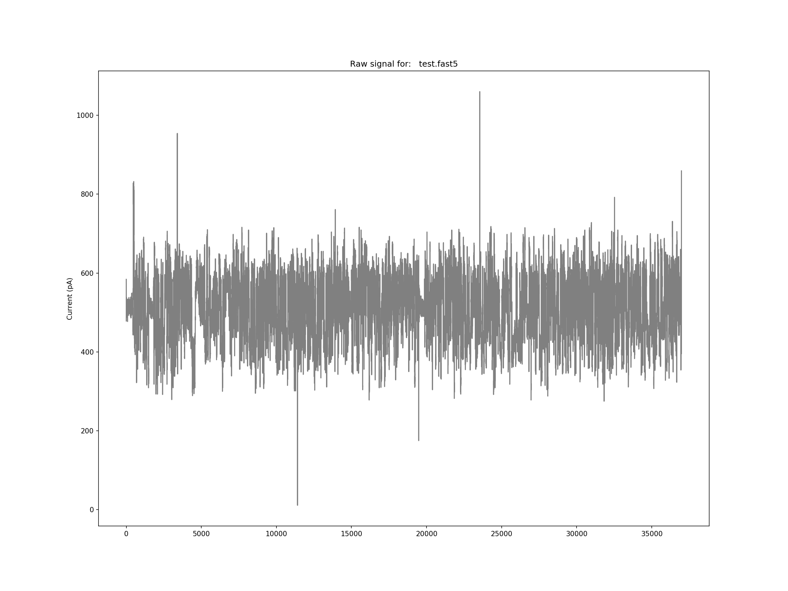
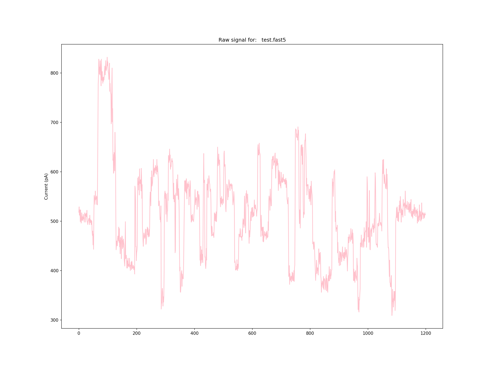

SquigglePlot
Background
When working with signal level data, generating a simple visualisation to help understand the structural breakdown of a nanopore read, or to simply creating a nice figure, and easy to use, multiple format, plotting script is needed. SquigglePlot allows for visualising sections of the signal, as well as implements some simple scaling to clean up hi/low noise, save in multiple formats (pdf, png, etc), and set the DPI of the save file for publications or posters.
Getting Started
SquigglePlot acts as a wrapper for matplotlib in python. Extract your signal with SquigglePull or point it at some fast5 files.
Instructions for use
Provide a top folder path -p, a signal file from SquigglePull.py -s, or an individual fast5 file-i, and SquigglePlot will plot the raw signal for you.
Quick start
Individual File full signal
python SquigglePlot.py -i ~/data/test.fast5

Plot first 2000 data points of each read from signal file and save at 300dpi pdf*
python SquigglePlot.py -s signals.tsv.gz --plot_colour teal -n 2000 --dpi 300 --no_show o--save test.pdf --save_path ./test/plots/
Plot all from top folder in green
python SquigglePlot.py -p ~/data/ --plot_colour -g
Plot between 2 values in pink
python SquigglePlot.py -i ~/data/test.fast5 --plot_colour pink -n 400,1600

Full usage
usage: SquigglePlot.py [-h] [-f F5F | -p F5_PATH | -s SIGNAL | -i IND]
[--head] [-n NUM] [--scale_hi SCALE_HI]
[--scale_low SCALE_LOW] [--plot_colour PLOT_COLOUR]
[--save SAVE] [--save_path SAVE_PATH] [--no_show]
[--dpi DPI]
script name - script description
optional arguments:
-h, --help show this help message and exit
-f F5F, --f5f F5F File list of fast5 paths
-p F5_PATH, --f5_path F5_PATH
Fast5 top dir
-s SIGNAL, --signal SIGNAL
Extracted signal file from SquigglePull
-i IND, --ind IND Individual fast5 file
--head Header present in signal or flat file
-n NUM, --Num NUM Section of signal to look at - -n 2000 or -n 100,1500
--scale_hi SCALE_HI Upper limit for signal outlier scaling
--scale_low SCALE_LOW
Lower limit for signal outlier scaling
--plot_colour PLOT_COLOUR
Colour of signal plot, takes any pyplot entry:
k,r,b,g,red,blue,etc...
--save SAVE Save file readname_saveArg.pdf --save saveArg.pdf, use
png, etc for other file types
--save_path SAVE_PATH
Save filepath
--no_show Do not show plot (used for saving many)
--dpi DPI Change DPI for publication figs, eg: --dpi 300